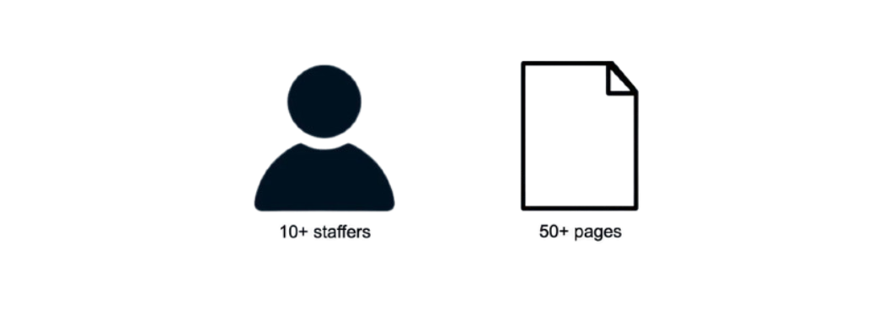

About Us
MathEXplained MAGAZINE aims to be a monthly newsletter that publishes articles in a newspaper-style format about various math-related subjects in a way which can appeal to a broader audience. Topics may range from trending news stories within the math community to in-depth dissections of niche and interesting mathematical topics for more advanced readers.
Our Goal
While many in the math community might feel as if math is something super familiar to us, the truth is that this isn't the case outside of it. Math doesn't get much coverage in mainstream media due to it being wrongfully seen by the general population either as a nerd's hobby or extremely foreign to the average person. Our mission as an organization is to promote mathematics by dissecting contemporary issues, covering interesting topics, and painting the field as fun and easy to get into.
← Back to Home